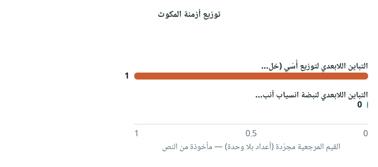

توزيع أزمنة المكوث
Residence time distribution
دالة تصف كيف تتوزع أزمنة بقاء العناصر في مفاعل متصل على مدى من القيم، بدل زمن مكوث واحد، وتُشتق من استجابة المفاعل لتغير مفاجئ في التركيز عند مدخله.
توزيع أزمنة المكوث يصف حقيقة أن العناصر الداخلة إلى مفاعل متصل لا تبقى فيه المدة نفسها. فبعضها يخرج سريعاً عبر مسار قصير، وبعضها يحتجز في مناطق راكدة أو يعود في مسارات ملتوية، فينتج مدى من الأزمنة لا رقماً واحداً. ويُقاس التوزيع بإدخال إشارة عند المدخل، تغيّر مفاجئ أو نبضة، ثم تسجيل استجابة التركيز عند المخرج مع الزمن. ومن هذه الاستجابة تُشتق دالة كثافة التوزيع E(t) ودالة التوزيع التراكمي F(t)، ويُستخرج منهما الزمن المتوسط والتباين. والزمن المتوسط يساوي حجم المفاعل مقسوماً على معدل التدفق الحجمي، وهو ما يُسمى الزمن الاسمي، لكنه لا يصف العرض. والتباين هو الذي يفرق بين مفاعل قريب من السلوك الأنبوبي ومفاعل قريب من الخلط الكامل. وأهم ما يقرره التوزيع عملياً هو أن التحويل في مفاعل حقيقي لا يُتنبأ به من الزمن الاسمي وحده، لأن الجزيئات التي تخرج قبل الزمن اللازم للتفاعل تخرج غير متفاعلة.
كيف تعمل الظاهرة؟
التوزيع ينشأ من ثلاثة أسباب تعمل معاً: اختلاف طول المسارات التي يسلكها السائل بين المدخل والمخرج، ووجود مناطق راكدة أو جيوب لا تتبادل مع التيار الرئيسي إلا ببطء، وإعادة الخلط الجزيئي أو الاضطرابي على طول المسار. فحين تُدخل إشارة، تخرج أولاً العناصر التي سلكت أقصر مسار، ثم تخرج ببطء العناصر التي دخلت الجيوب وتبادلت مع التيار بعد زمن. ولهذا يحمل شكل منحنى الاستجابة بصمة هندسة المفاعل: ذيل طويل يدل على جيوب راكدة، وقمة مبكرة حادة تدل على مسار متجاوز، وانتشار واسع متماثل يدل على تشتت محوري قوي.
العلاقة بالأرقام
الزمن المتوسط يساوي الحجم على التدفق، والتباين اللابعدي يقيس عرض التوزيع: صفر للسلوك الأنبوبي المثالي وواحد للخلط الكامل في وعاء واحد. ولمفاعل حجمه 0.10 m³ وتدفقه 0.002 m³/s يكون الزمن الاسمي 50 s. ويُستخرج التباين من الاستجابة المقاسة لا من الهندسة، فمفاعلان بالزمن الاسمي نفسه قد يختلفان في التباين اختلافاً يغيّر التحويل تغييراً كبيراً، خصوصاً في التفاعلات التي تكون سرعتها حساسة للتركيز.
مفاهيم متقاربة
التوزيع ليس خاصية للسائل وحده ولا للهندسة وحدها، بل للمنظومة كاملة عند تدفق معين؛ فالمفاعل نفسه يعطي توزيعاً مختلفاً إذا تغيّر معدل التدفق. ويُفصل عن الزمن الاسمي الذي هو معامل واحد لا دالة. ويُفصل عن نموذجي الحد: الخلط الكامل والانسياب الأنبوبي، فهما حالتان مرجعيتان يُقاس عليهما التوزيع الحقيقي لا بديلان عنه. ويُفصل عن عمر المحفّز الذي يقاس بأزمنة تشغيل طويلة ويُحدد استبداله، لا عن زمن بقاء جزيء في المفاعل.
حدود التطبيق
يُشترط في القياس أن تكون الإشارة صغيرة بما لا يغيّر كثافة السائل أو لزوجته، وأن تُدخل وتُقاس عند حدود واضحة للمفاعل، وإلا اختلط توزيع المفاعل بتوزيع أنابيب الدخول والخروج. وفي المفاعلات التي يتغير فيها الحجم أو الكثافة مع التفاعل لا يبقى الزمن الاسمي ثابتاً. ولا يصف التوزيع التفاعل وحده: توزيعان متساويان في المتوسط والتباين قد يعطيان تحويلاً مختلفاً إذا اختلفت التفاعلات في رتبتها، فالتوزيع شرط لازم لوصف المفاعل لا كافٍ.

| الكمية | القيمة | المصدر |
|---|---|---|
| الزمن الاسمي لمفاعل حجمه 0.10 m³ وتدفقه 0.002 m³/s | 50 s | [2] |
| التباين اللابعدي لتوزيع أُسّي (خلط كامل) | 1 — | [2] |
| التباين اللابعدي لنبضة انسياب أنبوبي مثالي | 0 — | [3] |
المصادر
- 1 Continuous flow systems — P. V. Danckwerts — Elsevier (Chemical Engineering Science) (1953). doi.org/10.1016/0009-2509(53)80001-1 · اطُّلع عليه 2026-11-28
- 2 Elements of Chemical Reaction Engineering, 4th ed. — H. Scott Fogler — Prentice Hall (2006). openlibrary.org/books/OL3310452M/Elements_of_chemical_reaction_engineering · اطُّلع عليه 2026-11-28
- 3 Chemical Reaction Engineering, 3rd ed. — Octave Levenspiel — John Wiley & Sons (1999). openlibrary.org/books/OL699117M/Chemical_reaction_engineering · اطُّلع عليه 2026-11-28
استشهد بهذا المصطلح
الصيغتان مبنيتان من بيانات الصفحة نفسها: العنوان والتاريخ ورابط النسخة المنشورة.
توزيع أزمنة المكوث — Residence time distribution. (2026). ديوان المعرفة — انفراد. https://infiradev.com/diwan/terms/term-residence-time-distribution.html
@misc{term-residence-time-distribution2026,
title = {توزيع أزمنة المكوث},
titleaddon = {Residence time distribution},
howpublished = {{ديوان المعرفة — انفراد} — مرجع علمي عربي},
year = {2026},
url = {https://infiradev.com/diwan/terms/term-residence-time-distribution.html},
urldate = {2026-11-28},
note = {مراجعة علمية: Abdullah Al-Huwaidi}
}
راجعه: Abdullah Al-Huwaidi · 2026-11-28 · آخر تحديث 2026-11-28